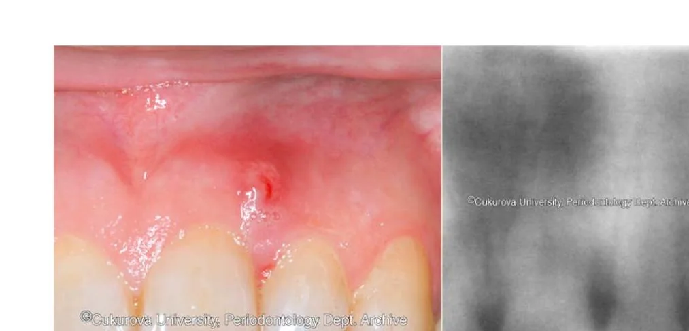
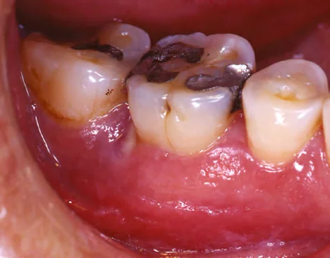
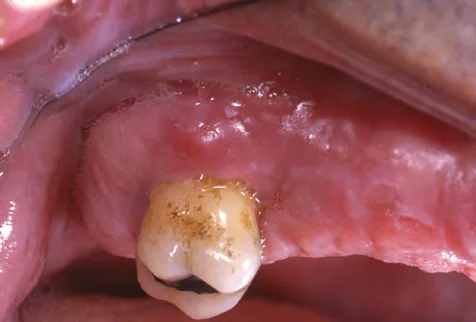

نسخه استخراجشده؛ ترجمه یا تأیید علمی انجام نشده است. وضعیت: captured
تجمع چرک در بافتهای پریودنتال، در دیواره جانبی پاکت. دو سناریوی متفاوت آن را میسازد:


تشدید پاکت موجود — وقتی مسیر تخلیه بسته میشود و چرک نمیتواند خارج شود.
پس از جرمگیری ناقص — جرم عمقی باقی میماند در حالی که دهانه پاکت با بهبود بافت بسته شده است؛ عفونت در فضای بسته محبوس میشود.
پس از مصرف آنتیبیوتیک سیستمیک بدون دبریدمان مکانیکی.
نفوذ جسم خارجی — قطعه نخ دندان، پوست پاپکورن، خلال چوبی، برس بیندندانی.
🔑 نکته بالینی مهم: آبسه پریودنتال پس از جرمگیری، اغلب بهمعنای جرم عمقی باقیمانده است — نه شکست ذاتی درمان. دبریدمان کامل، پاسخ اصلی است.
⚠️ آبسههای پریودنتال متعدد و مکرر میتوانند نخستین نشانه دیابت کنترلنشده باشند؛ در چنین بیماری غربالگری قند خون را در نظر بگیر.
تورم بیضیشکل روی سطح جانبی ریشه، در امتداد لثه.

پاکت عمیق در همان ناحیه.
ترشح چرک، خودبهخود یا با فشار ملایم.
حساسیت به دق جانبی بیشتر از دق عمودی.
شروع سریع، درد ضرباندار، گاه لقی موقت و بالا آمدن حس دندان.
| ویژگی | آبسه پریودنتال | آبسه پریاپیکال |
|---|---|---|
| تست حیات پالپ | 🟢 زنده | 🔴 نکروز |
| محل تورم | جانبی، نزدیک مارجین لثه | نزدیک آپکس، در مخاط آلوئولار |
| پاکت | عمیق در همان ناحیه | معمولاً طبیعی |
| دق | جانبی حساستر | عمودی حساستر |
| رادیوگرافی | تحلیل استخوان در امتداد ریشه | رادیولوسنسی اپیکال |
🔑 تست حیات پالپ، تعیینکنندهترین آزمون است. اگر پالپ زنده باشد، آبسه پریاپیکال نیست — و درمان کاملاً متفاوت میشود.
هدف اصلی، خارج کردن چرک است. دو مسیر:
از راه پاکت — با وارد کردن ملایم کورت و باز کردن دیواره پاکت. مسیر ترجیحی.
برش خارجی — تنها اگر تخلیه از راه پاکت ممکن نباشد.
حذف جرم و بافت گرانوله؛ در صورت وجود جسم خارجی، خارج کردن آن.
مسکن و شستوشو؛ بازبینی ظرف ۲۴ تا ۴۸ ساعت.
⚠️ تنها در حضور علائم سیستمیک (تب، بیحالی، لنفادنوپاتی)، گسترش عفونت به بافتهای نرم (سلولیت)، یا در بیمار با نقص ایمنی.
🔑 آنتیبیوتیک جایگزین تخلیه نیست. تجویز آنتیبیوتیک بدون تخلیه، مشکل را حل نمیکند و فقط علائم را موقتاً میپوشاند.
درمان کامل پریودنتال و بازنگری پیشآگهی.
آبسه در دندانی با از دست رفتن شدید چسبندگی، میتواند نشانه پیشآگهی ناامیدکننده باشد.
در آبسههای متعدد و مکرر، غربالگری دیابت.
⚠️ اشتباه رایج ۱: در آبسه پریودنتال، پالپ معمولاً زنده است.
⚠️ اشتباه رایج ۲:تخلیه گام نخست است، نه آنتیبیوتیک.
⚠️ اشتباه رایج ۳: آبسه پس از جرمگیری اغلب یعنی جرم عمقی باقیمانده.